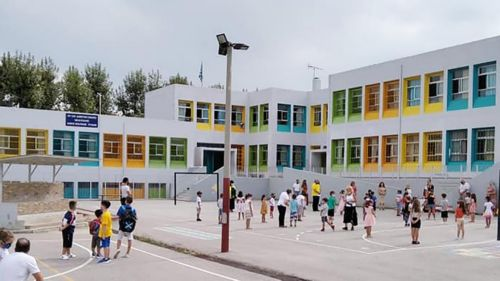
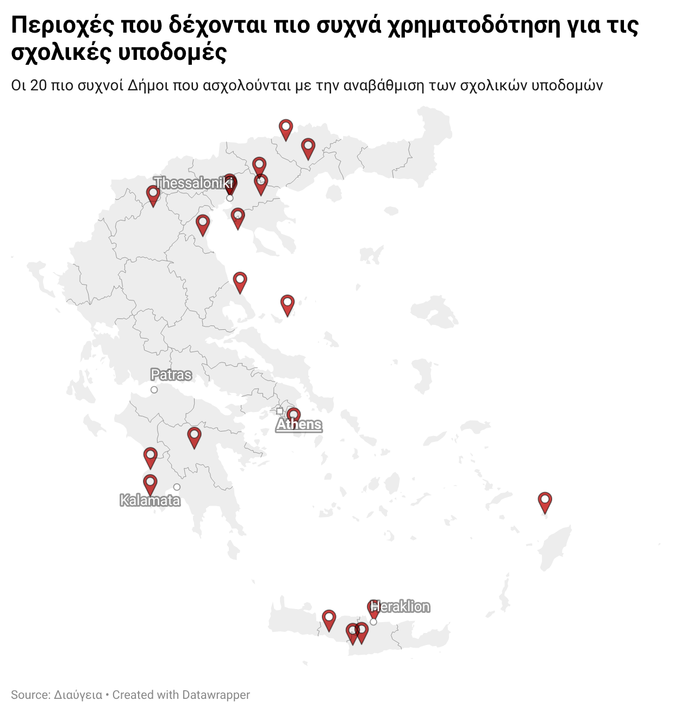
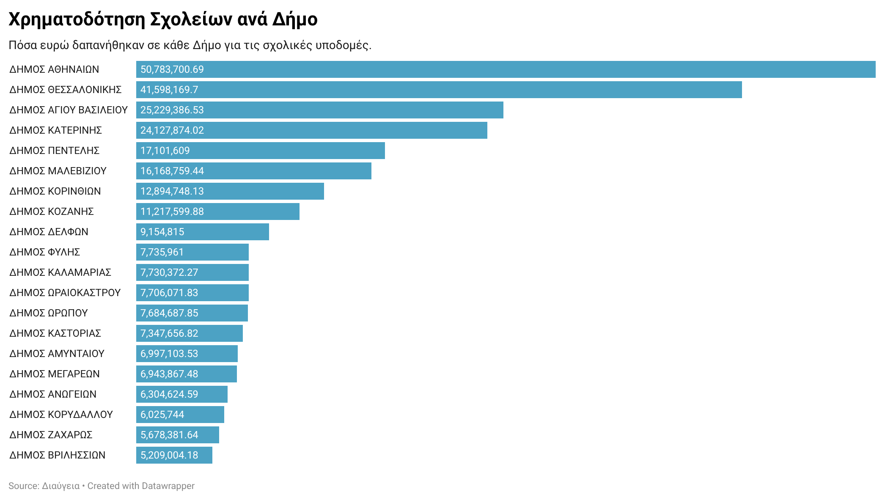
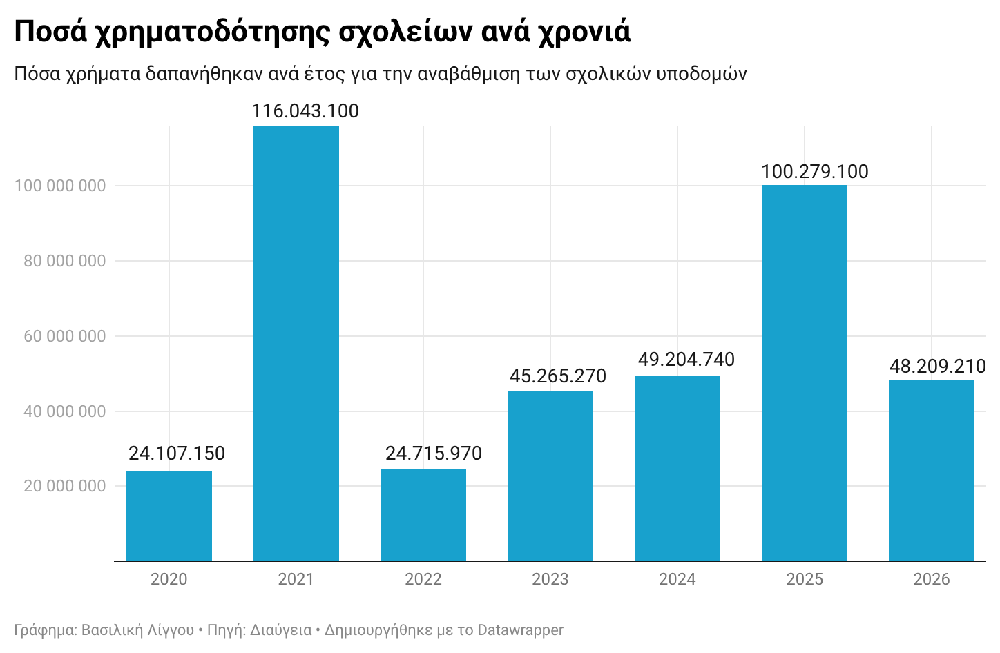
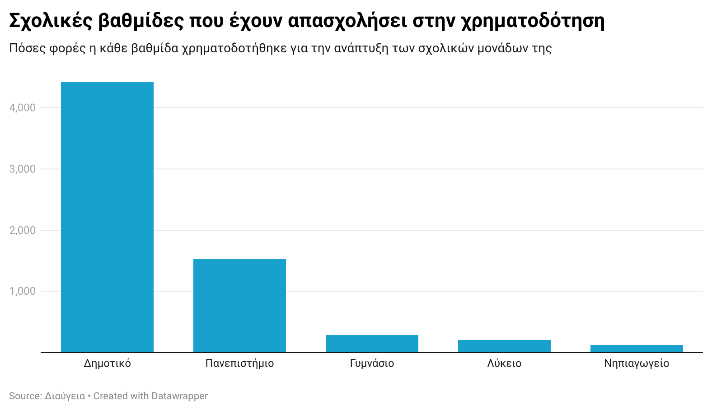

Ανάλυση Δεδομένων: Η χρηματοδότηση των σχολικών υποδομών
Ανάλυση σε δεδομένα του δημοσίου για την χρηματοδότηση των σχολείων όσον αφορά τις υποδομές τους.

Η εξέταση της χρηματοδότησης των υποδομών των σχολικών μονάδων της χώρας από το κράτος. Πόσα χρήματα δίνονται, για ποιον λόγο, κάθε πότε και πού. Δεδομένα από την ιστοσελίδα της Διαύγειας.
Το κράτος έχει υποχρέωση προς τους πολίτες και ειδικότερα προς στα παιδιά να μεριμνά γι αυτά. Η εκπαίδευση είναι ο πυρήνας για την διαμόρφωση ανθρώπων με κριτική σκέψη και σφαιρική γνώση. Τα παιδιά περνάνε τη μισή τους ημέρα στα σχολεία και δικαιούνται να βρίσκονται σε ένα προστατευμένο περιβάλλον, όσο πιο φιλικό προς εκείνα γίνεται. Οι υποδομές των σχολείων είναι βασικός παράγοντας γι αυτό. Το κράτος οφείλει να συντηρεί και να βελτιώνει τους χώρους που φιλοξενούν τους μαθητές, να τους διαμορφώνει έτσι ώστε να μην τα απωθούν αλλά να θέλουν να βρίσκονται σε ένα καλαίσθητο και ασφαλές περιβάλλον. Κάθε χρόνο -ιδιαίτερα το καλοκαίρι- δίνονται μεγάλα ποσά για την συντήρηση, ανάπτυξη, αντικατάσταση καθώς και δημιουργία νέων υποδομών στα σχολικά περιβάλλοντα. Κάθε Ιούλιο με τέλη Αυγούστου οι δήμοι της χώρας λαμβάνουν κάποια χρήματα, αλλά και για μια έκτακτη ανάγκη έχουν την δυνατότητα να λαμβάνουν μια ακόμη χρηματοδότηση.
Βασική υπόθεση του άρθρου λοιπόν, είναι να εξετάσουμε πόσα χρήματα δίνονται, ποιες περιοχές έχουν μεγαλύτερη ανάγκη και για ποιον λόγο. Δηλαδή, να γίνει πιο ξεκάθαρο στο ευρύ κοινό το τι χρειάζονται τα σχολεία στον τομέα των υποδομών για να είναι επισκέψιμα. Στην κρατική ιστοσελίδα «Διαύγεια» καθημερινά ανεβαίνουν εκατοντάδες επίσημα έγγραφα, ώστε να είναι διαφανείς οι ενέργειες που γίνονται μέχρι να υλοποιηθεί ένα πρότζεκτ. Αναλύσαμε δεδομένα των τελευταίων 6 χρόνων από την συγκεκριμένη πηγή και με βάση αυτή έχουμε τα εξής συμπεράσματα.

Οι παραπάνω περιοχές έχουν απασχολήσει περισσότερο το κράτος ως προς την χρηματοδότηση των σχολικών εγκαταστάσεων. Πρώτη βρίσκεται η Αθήνα η οποία διαθέτει χιλιάδες σχολεία, την οποία συνοδεύει ύστερα η Θεσσαλονίκη.

Συνολικά από το 2020 μέχρι σήμερα έχουν δαπανηθεί εκατομμύρια ευρώ ανά περιοχή με τα μεγαλύτερα (τα 30 πρώτα) ποσά να βρίσκονται στο παραπάνω διάγραμμα.

Ωστόσο, συνολικά ποσά που έχουν δοθεί ανά έτος είναι τα παραπάνω. Το 2021 φτάνει τα 115 εκατομμύρια ευρώ περίπου και ακολουθεί το 2025 με 15 εκατομμύρια λιγότερα.
Στην κατανομή των πόρων, μεταξύ των σχολικών βαθμίδων, βαρύτητα έχει δοθεί στα δημοτικά με διαφορά. Ακολουθούν τα πανεπιστήμια, τα γυμνάσια, τα λύκεια και τα νηπιαγωγεία αντίστοιχα.

Όσον αφορά το για ποιες ενέργειες γίνονται περισσότερες δαπάνες, ακολουθεί ένας πίνακας με το πόσα χρήματα δόθηκαν για τις συγκεκριμένες ανάγκες.
| Δραστηριότητα | Ποσό (ευρώ) |
|---|---|
| Συντήρηση κτιρίων | 823.714,14 |
| Ανακαίνιση αιθουσών | 436.907,81 |
| Επισκευή συστημάτων | 215.678,30 |
| Εγκατάσταση θέρμανσης | 150.080,21 |
| Αντικατάσταση κουφωμάτων | 90.390,71 |
| Εγκατάσταση πυρασφάλειας | 97.659,80 |
| Αναβάθμιση εργαστηρίων | 29.378,74 |
| Βελτίωση WC | 98.943,95 |
| Εγκατάσταση Wi-Fi | 15.450,00 |
| Όροφοι/Στέγες/Ταβάνια | 89.043,64 |
| Τουαλέτες | 66.793,09 |
Συνοψίζοντας, τα δεδομένα των τελευταίων έξι ετών δείχνουν ότι το κράτος εκταμιεύει σημαντικούς πόρους, όμως η στατιστική δεν μπορεί να αποδώσει την ποιότητα της καθημερινότητας των μαθητών. Η ανάλυση των κρατικών εγγράφων δεν είναι το τέλος της διαδρομής, αλλά η αφετηρία για να απαιτήσουμε μια εκπαίδευση που δεν θα στεγάζεται απλώς σε λειτουργικά κτίρια, αλλά σε περιβάλλοντα που εμπνέουν. Η διαφάνεια της πληροφορίας είναι πλέον το δικό μας όπλο για να μετατρέψουμε τους αριθμούς της «Διαύγειας» σε ασφαλή θρανία.